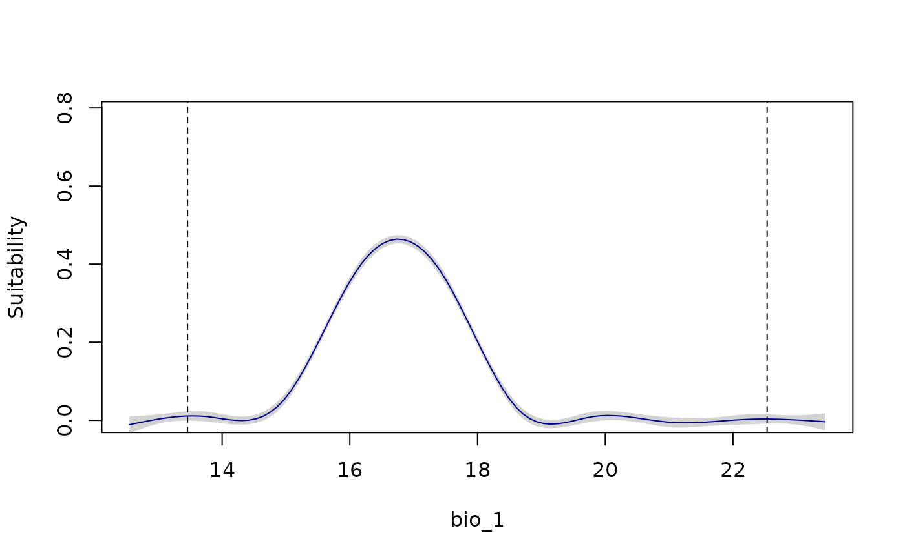
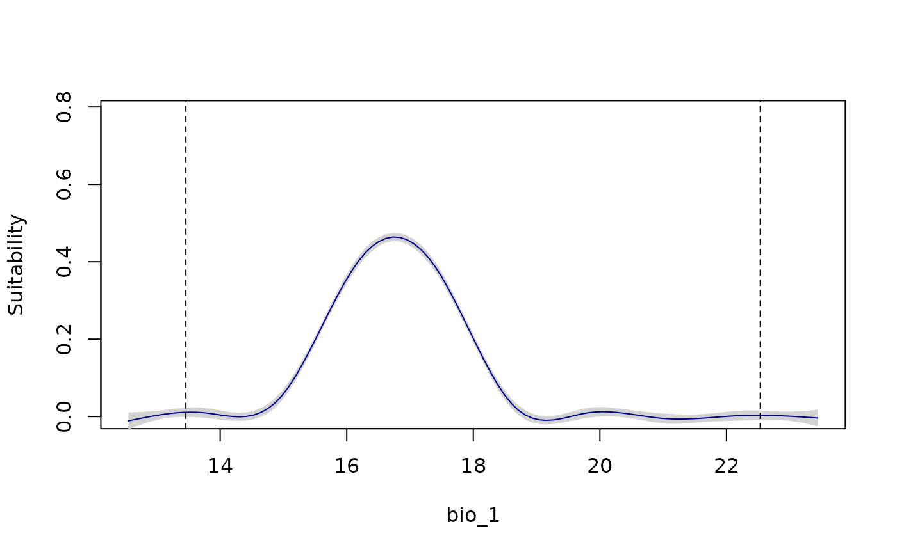

Plot variable responses for fitted models. Responses based on single or multiple models can be plotted.
Usage
# Single variable response curves
response_curve(models, variable, modelID = NULL, n = 100,
show_variability = FALSE, show_lines = FALSE, data = NULL,
new_data = NULL, averages_from = "pr_bg", extrapolate = TRUE,
extrapolation_factor = 0.1, add_points = FALSE, p_col = NULL,
l_limit = NULL, u_limit = NULL, xlab = NULL,
ylab = "Suitability", col = "darkblue", ...)
# Response curves for all variables in all or individual models
all_response_curves(models, modelID = NULL, n = 100, show_variability = FALSE,
show_lines = FALSE, data = NULL, new_data = NULL,
averages_from = "pr_bg", extrapolate = TRUE,
extrapolation_factor = 0.1, add_points = FALSE,
p_col = NULL, l_limit = NULL, u_limit = NULL,
xlab = NULL, ylab = "Suitability", col = "darkblue",
ylim = NULL, mfrow = NULL, ...)Arguments
- models
an object of class
fitted_modelsreturned by thefit_selected()function.- variable
(character) name of the variable to be plotted.
- modelID
(character) ModelID(s) to be considered. By default all IDs in
modelsare included. Default = NULL.- n
(numeric) an integer guiding the number of breaks to produce the curve. Default = 100.
- show_variability
(logical) if
modelIDis defined, shows variability in response curves considering replicates. IfmodelIDis not defined, the default, FALSE, always shows variability from multiple models if present inmodels.- show_lines
(logical) whether to show variability by plotting lines for all models or replicates. The default = FALSE, uses a GAM to characterize a median trend and variation among modes or replicates. Ignored if
show_variability= FALSE andmodelIDis defined.- data
data.frame or matrix of data used in the model calibration step. The default, NULL, uses data stored in
models.- new_data
a
SpatRaster, data.frame, or matrix with values for variables representing an area or scenario of interest for model projection. Default = NULL.- averages_from
(character) specifies how the averages or modes of the other variables are calculated when producing responses for the variable of interest. Options are "pr" (from the presences) or "pr_bg" (from presences and background). Default is "pr_bg". See details.
- extrapolate
(logical) whether to allow extrapolation of the response outside training conditions. Ignored if
new_datais defined. Default = TRUE.- extrapolation_factor
(numeric) a value used to calculate how much to expand the training region for extrapolation. Larger values produce extrapolation farther from training limits. Default = 0.1.
- add_points
(logical) if
TRUE, adds the original observed points (0/1) to the plot. This also setsylim = c(0, 1), unless these limits are defined as part of.... Default =FALSE.- p_col
(character) color for the observed points when
add_points = TRUE. Any valid R color name or hexadecimal code. Default = "black".- l_limit
(numeric) directly specifies the lower limit for the variable. Default = NULL, meaning the lower limit will be calculated from existing data. (if
extrapolation = TRUE).- u_limit
(numeric) directly specifies the upper limit for the variable. Default = NULL, meaning the aupper limit will be calculated from existing data. (if
extrapolation = TRUE).- xlab
(character) a label for the x axis. The default, NULL, uses the name defined in
variable.- ylab
(character) a label for the y axis. Default = "Suitability".
- col
(character) color for lines. Default = "darkblue".
- ...
additional arguments passed to
plot.- ylim
(numeric) vector of length two with limits for the y axis. Directly used in
all_response_curves. Default = NULL.- mfrow
(numeric) a vector specifying the number of rows and columns in the plot layout, e.g., c(rows, columns). Default is NULL, meaning the grid will be arranged automatically based on the number of plots.
Value
For response_curve(), a plot with the response curve for a variable. For
all_response_curves(), a multipanel plot with response curves fro all
variables in models.
Details
The response curve for a variable of interest is generated with all other variables set to their mean values (or mode for categorical variables), calculated either from the presence records (if averages_from = "pr") or the combined set of presence and background records (if averages_from = "pr_bg").
For categorical variables, a bar plot is generated with error bars showing variability across models (if multiple models are included).
Examples
# Example with maxnet
# Import example of fitted_models (output of fit_selected())
data(fitted_model_maxnet, package = "kuenm2")
# Response curves for one variable at a time
response_curve(models = fitted_model_maxnet, variable = "bio_1")
 response_curve(models = fitted_model_maxnet, variable = "bio_1",
add_points = TRUE)
response_curve(models = fitted_model_maxnet, variable = "bio_1",
add_points = TRUE)
 response_curve(models = fitted_model_maxnet, variable = "bio_1",
show_lines = TRUE)
response_curve(models = fitted_model_maxnet, variable = "bio_1",
show_lines = TRUE)
 response_curve(models = fitted_model_maxnet, variable = "bio_1",
modelID = "Model_192", show_variability = TRUE)
response_curve(models = fitted_model_maxnet, variable = "bio_1",
modelID = "Model_192", show_variability = TRUE)
 response_curve(models = fitted_model_maxnet, variable = "bio_1",
modelID = "Model_192", show_variability = TRUE,
show_lines = TRUE)
# Example with maxnet
# Import example of fitted_models (output of fit_selected())
data(fitted_model_maxnet, package = "kuenm2")
# Response curves for all variables at once
all_response_curves(fitted_model_maxnet)
all_response_curves(fitted_model_maxnet, show_lines = TRUE)

all_response_curves(fitted_model_maxnet, show_lines = TRUE,
add_points = TRUE)
response_curve(models = fitted_model_maxnet, variable = "bio_1",
modelID = "Model_192", show_variability = TRUE,
show_lines = TRUE)
# Example with maxnet
# Import example of fitted_models (output of fit_selected())
data(fitted_model_maxnet, package = "kuenm2")
# Response curves for all variables at once
all_response_curves(fitted_model_maxnet)
all_response_curves(fitted_model_maxnet, show_lines = TRUE)

all_response_curves(fitted_model_maxnet, show_lines = TRUE,
add_points = TRUE)
 all_response_curves(fitted_model_maxnet, modelID = "Model_192",
show_variability = TRUE, show_lines = TRUE)
all_response_curves(fitted_model_maxnet, modelID = "Model_192",
show_variability = TRUE, show_lines = TRUE)
 all_response_curves(fitted_model_maxnet, modelID = "Model_192",
show_variability = TRUE, show_lines = TRUE,
add_points = TRUE)
all_response_curves(fitted_model_maxnet, modelID = "Model_192",
show_variability = TRUE, show_lines = TRUE,
add_points = TRUE)